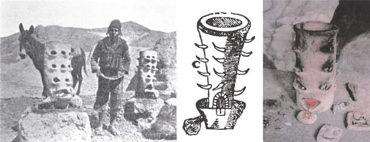
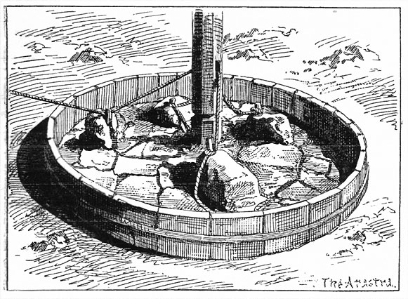
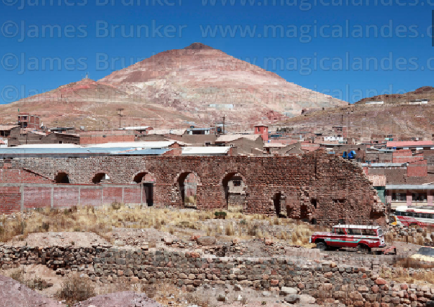
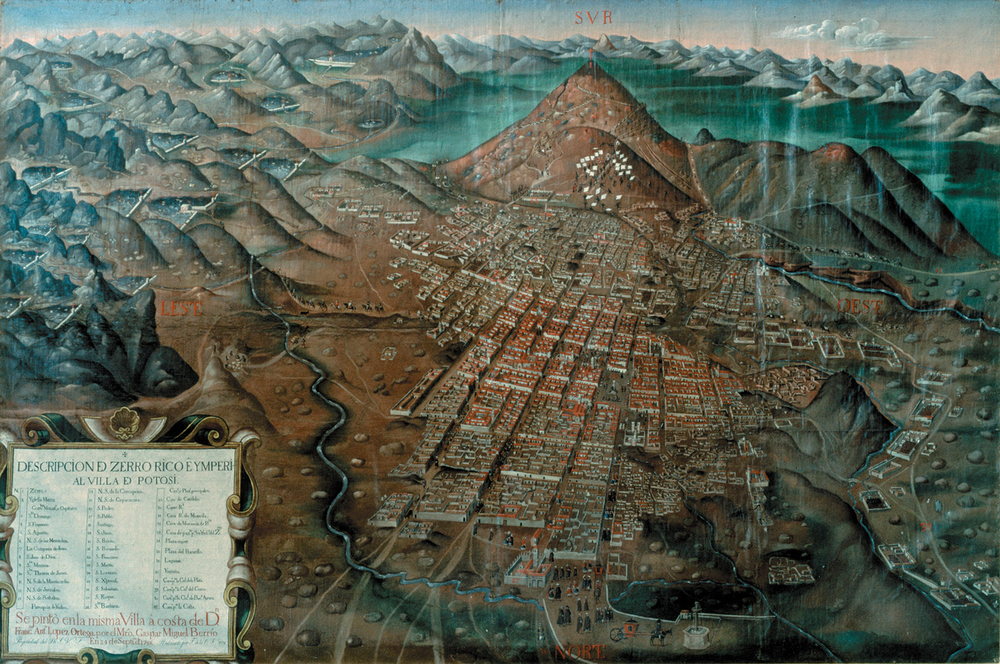
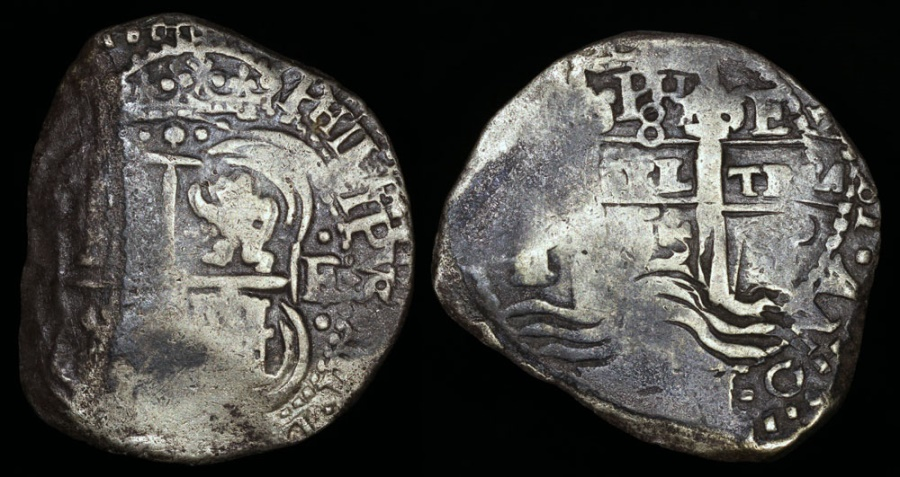
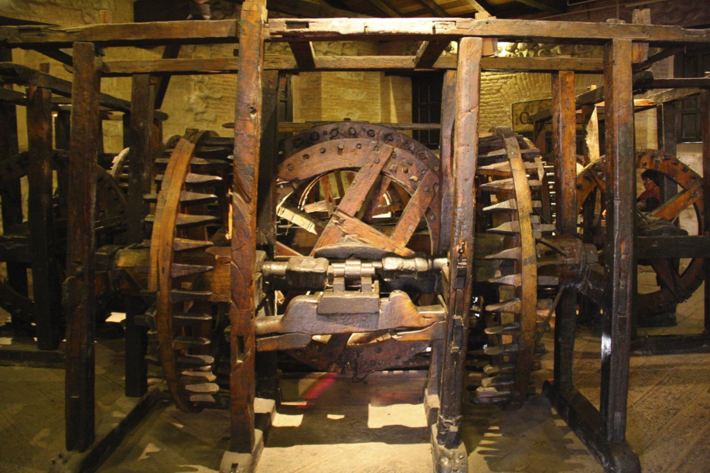
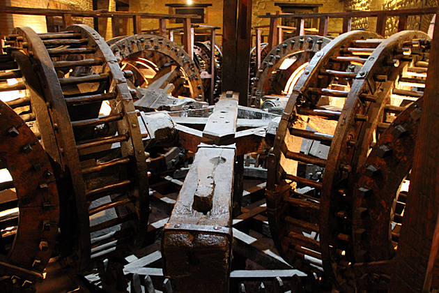
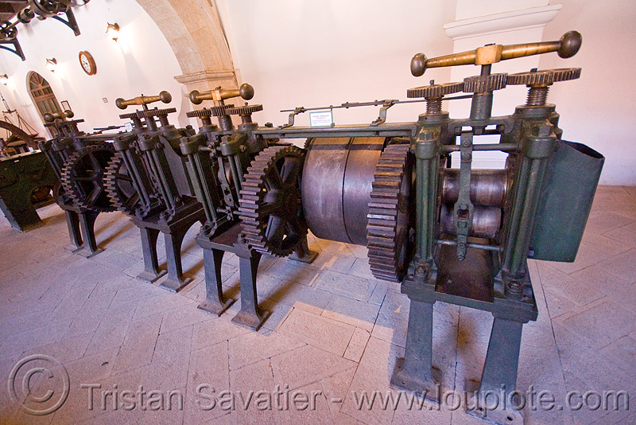
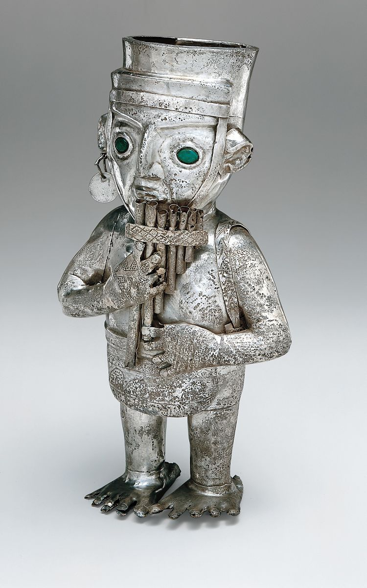

@manuel_ponce_
.
Potosí, the worlds first capatilist society in the 16th century. The original mining industry was ran by
dominant elites, first ingiginous then Spanish, who was then carried out by the peoples known as
Yanaconas. This was done by the technology that was put in place in Potosi by the mass industrialization of silver there.
.jpg)
The early production of silver consisted of the huayras. They were highly efficient smelters of high-grade
silver ores, but they required fuel that most used llama dung or moss found at high altitudes.

(A) metalurgista anónimo en Bolivia (Peele 1893: 9); B) dibujo de una huayra colonial realizado por Alonso Barba (1923 [1640]: 199); C) reconstrucción en el Museo Nacional de La Paz (foto: C. Zori).)Once Potosi had gone through most of its fine silver ore.
The introduction of Amalgamation helped produce more of the silver that was desired.
The process consisted of water mills like the one shown, to brake down the less pure ores
found deeper in the mine which was then mixed with mercury to help seperate the good metals from the rock.

(From Dan DeQuille (William Wright), History of the Big Bonanza, pp. 47-108.)
Hydrolics played a huge role in the mass production of silver in Potosi. From transporting the ore into the city
to powering the refaining mills. This led to the engineering of canals, pulleys, water beds, and dams.


(A)“Historia de La Villa Imperial de Potosí. In Three Volumes. By Bartolomé Arzâns de Orsüa y Vela. Edited by Lewis Hanke and Gunnar Mendoza. [Brown University Bicentennial Publications, Studies in the Fields of General Scholarship.] (Providence, R. I.: Brown University Press. 1965. Pp. Clxxxv, 407; Xiii, 501; Xiii, 556. $45.00 the Set.).” The American historical review (April 1, 1967); B)The Cerro Rico (Rich Hill) and the city of Potosí, in what is now Bolivia; painting by Gaspar Miguel Berrio, 1758)
These coins where traded all around the world and Potosi was the leading producer of silver mint.
The early coins of the Spanish were roughly shaped and only pressed with marks of the mint.
Problems with counterfeit were met around 1650s and new measures had to be taken.

(1652-1667 E Bolivia 8 Real Potosí Mint – Phillip IV – Cob (KM-21) Silver, crowned cross of Jerusalem with castles and lions in the four quadrants // Crowned pillars and waves. Struck at the Potosi Mint. Original toning, 38 mm, 23.8 gm. )


These were some later rollers to the mint houses in Potosi that helped produce the circular shaped silver Spanish coins.
Not just silver coins were shaped out but also decorative items that could also be traded around the world
as silver was commodity.

(The Metropolitan Museum of Art. Art of Oceania, Africa, and the Americas from the Museum of Primitive Art. New York: The Metropolitan Museum of Art, 1969, no. 471.)
Tepaske, John Jay. 1990. “Silver and Entrepreneurship in Seventeenth-Century Potosí: The Life and Times of Antonio López de Quiroga (Book).” American Historical Review 95 (5): 1664. doi:10.2307/2162943.
Villamarin, Juan A. Ethnohistory 32, no. 4 (1985): 394-96. Accessed October 8, 2020. doi:10.2307/481908.
“Historia de La Villa Imperial de Potosí. In Three Volumes. By Bartolomé Arzâns de Orsüa y Vela. Edited by Lewis Hanke and Gunnar Mendoza. [Brown University Bicentennial Publications, Studies in the Fields of General Scholarship.] (Providence, R. I.: Brown University Press. 1965. Pp. Clxxxv, 407; Xiii, 501; Xiii, 556. $45.00 the Set.).” The American historical review (April 1, 1967).
Villamarin, Juan A. Ethnohistory 32, no. 4 (1985): 394-96. Accessed October 8, 2020. doi:10.2307/481908.
“Historia de La Villa Imperial de Potosí. In Three Volumes. By Bartolomé Arzâns de Orsüa y Vela. Edited by Lewis Hanke and Gunnar Mendoza. [Brown University Bicentennial Publications, Studies in the Fields of General Scholarship.] (Providence, R. I.: Brown University Press. 1965. Pp. Clxxxv, 407; Xiii, 501; Xiii, 556. $45.00 the Set.).” The American historical review (April 1, 1967).